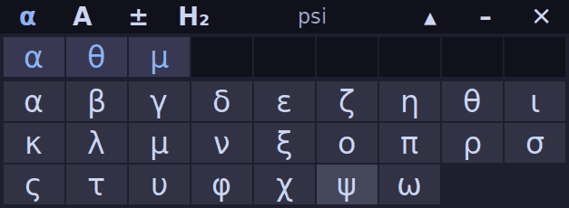

Teclado Científico
Letras griegas y símbolos
Un teclado flotante para escribir letras griegas y símbolos en sus resúmenes. Clic en la letra y se escribe donde esté el cursor, sin copiar ni pegar. Gratis.
Este programa es para computadoras (Windows, Mac o Linux). Si está en un celular o una tablet, abra esta página desde su computadora para descargarlo.
Versión actual: 1.4

Cómo se usa
- Abra el programa: aparece una barra pequeña que queda siempre visible.
- Haga clic en su documento y deje el cursor donde quiere escribir.
- Haga clic en una letra del teclado. Las pestañas α, Α, ± y H₂ cambian entre minúsculas, mayúsculas, símbolos y química o medicina (subíndices, superíndices, ⇌, ∑, ∝).
- Pase el mouse sobre un símbolo para ver su nombre. La fila de arriba repite los últimos que usó.
El botón ▴ reduce el teclado a una sola fila. En Windows y en Linux con X11, Ctrl+Alt+G lo oculta y lo vuelve a mostrar.
La primera vez
Windows
Puede aparecer "Windows protegió su PC". Elija Más información y luego Ejecutar de todas formas. El programa no tiene firma digital, por eso Windows avisa, pero no instala nada ni se conecta a internet. Algunos antivirus pueden advertir lo mismo por esa razón.
Mac (macOS Sequoia o posterior)
- Descomprima el .zip y mueva la aplicación a la carpeta Aplicaciones.
- Ábrala con doble clic. macOS mostrará un aviso de que no pudo verificarla: ciérrelo.
- Abra Ajustes del Sistema > Privacidad y seguridad, baje hasta la sección Seguridad y pulse Abrir igualmente. Confirme con su contraseña o Touch ID.
- En Privacidad y seguridad > Accesibilidad, active la aplicación para que pueda escribir en otros programas.
En macOS 14 o anterior también sirve hacer clic derecho sobre la aplicación y elegir Abrir. Versión en prueba.
Linux
Descomprima el archivo con tar -xzf TecladoCientifico-Linux.tar.gz y ejecute ./TecladoCientifico. Funciona en entornos con X11; en Wayland puede no escribir (el programa avisa). Versión en prueba.